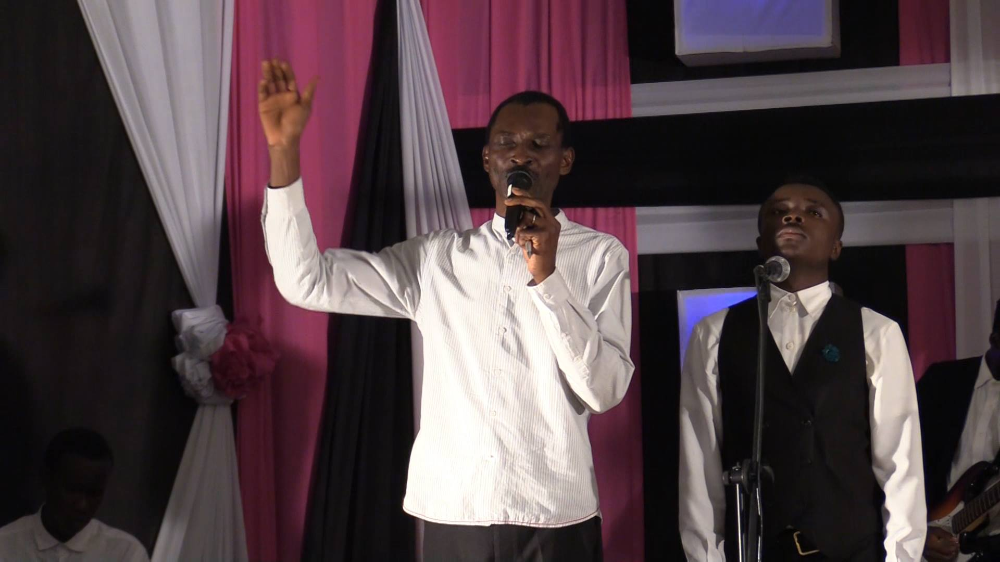
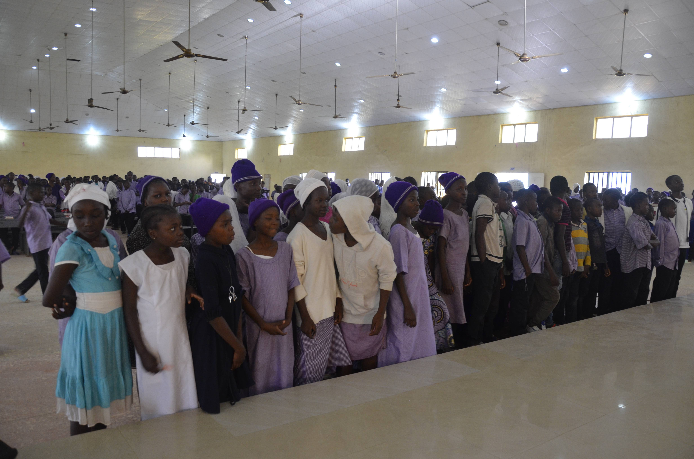
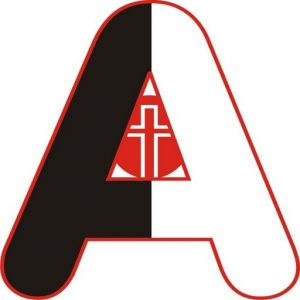
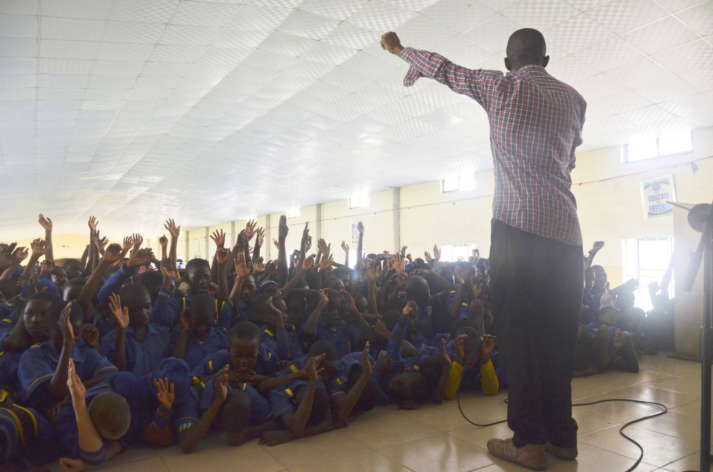
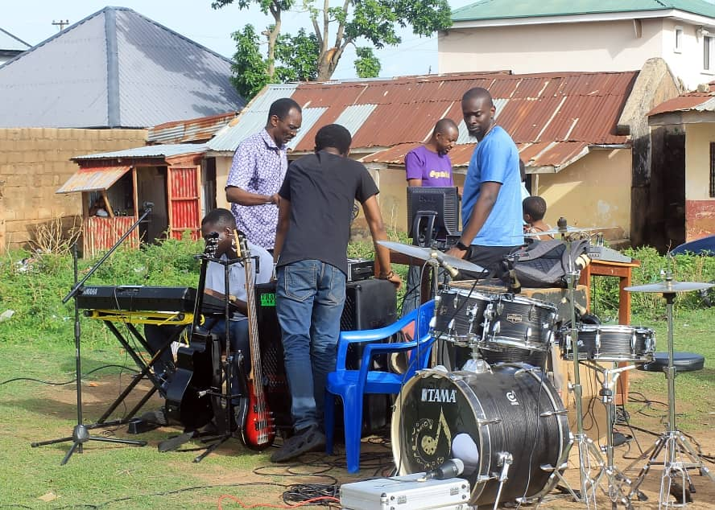
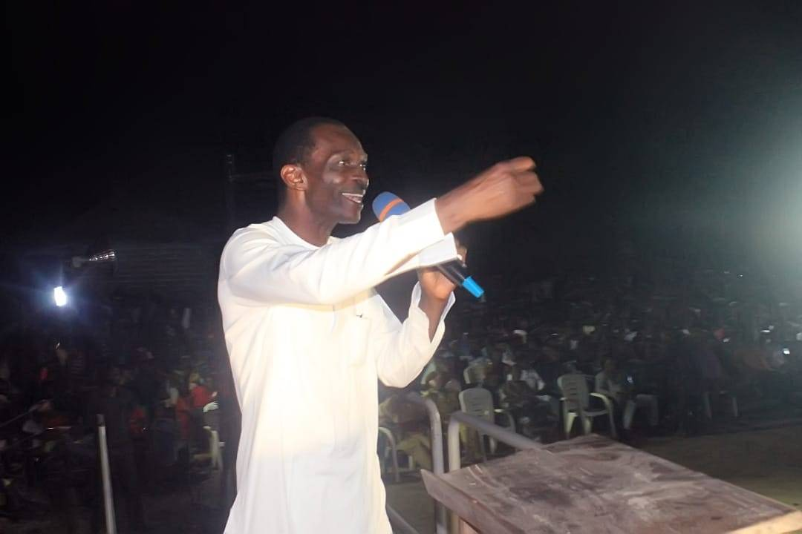
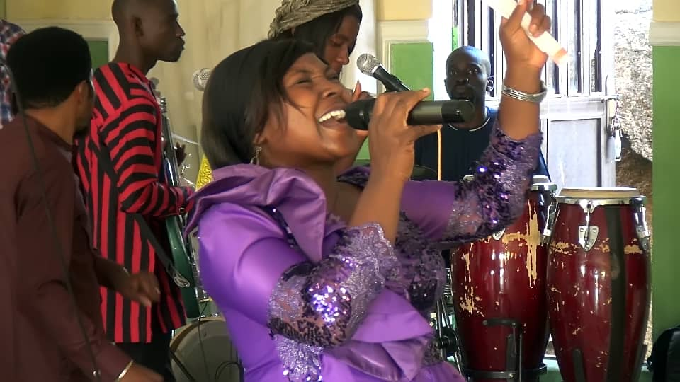
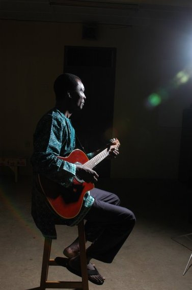

WINGS
The WINGS concert series uses music, dance, drama, stories, and illustration. The point is the Gospel of Christ, not entertainment alone.


Jos, Nigeria
Alternorm is committed to creatively communicating the Gospel using the arts and media, and altering norms through Christ. Formally begun in 1997 as Joi Ministries.

The WINGS concert series uses music, dance, drama, stories, and illustration. The point is the Gospel of Christ, not entertainment alone.

Schools Outreach Project. Teams visit schools at no cost to the school, with music, theatre, dance, humor, and a short message.

The same teams also go into neighborhoods. The site says this is because Jesus loves the children there.

A collaboration with Ibaji Liberation Outreach Mission in the Ibaji community of Kogi State, coordinated with CAN, PFN, and ministers of the area. The public site lists a March 2026 edition.

Praise and worship, bimonthly or quarterly, on the last Sunday of the month, with the Beautiful Gate Zone of the Redeemed Christian Church of God, Plateau Province 4, Jos. Soundalive, Graciah, and Joe Ifah are regulars, with the Beautiful Gate Voices and other RCCG choirs.

The fence and gate are done. The hope described on the Partners in Joy page is offices, studios, storage, and an event center.

Christovibes, on the Alternorm site, plays Christian music from Africa and the rest of the world, 24 hours, at christovibes.com.
A gift in US dollars on the live Alternorm site is received by Partners in Joy. A gift in naira stays on Alternorm. A check to Partners In Joy, Inc., PO Box 380631, Duncanville, Texas 75138, should say Alternorm. Ruth Carlson is the liaison. Joi7 Premises, Hwolshe, Jos, Nigeria 930253. This preview does not accept the gift.
Photographs and words are from partners-in-joy.org and alternorm.org, read October 20, 2026. This sample does not take gifts or send messages. Partners in Joy, Inc. is a 501(c)(3) incorporated in Texas in 2000. EIN 75-2827312. PO Box 380631, Duncanville, Texas 75138.